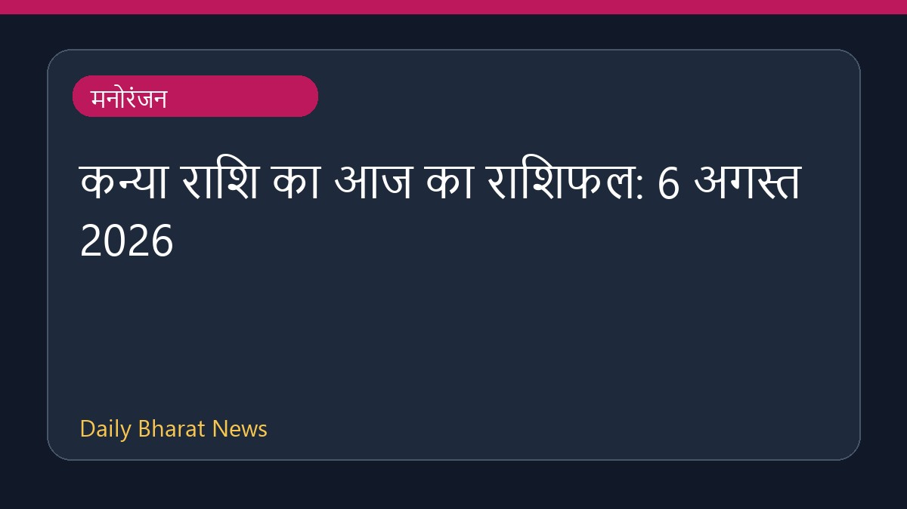
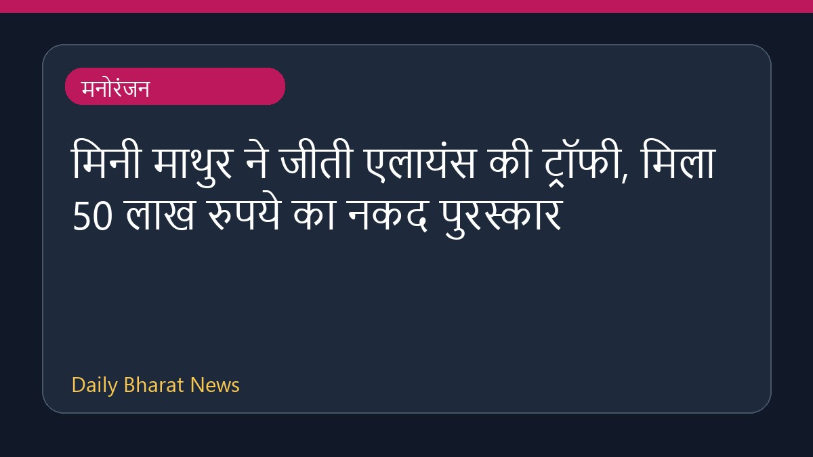
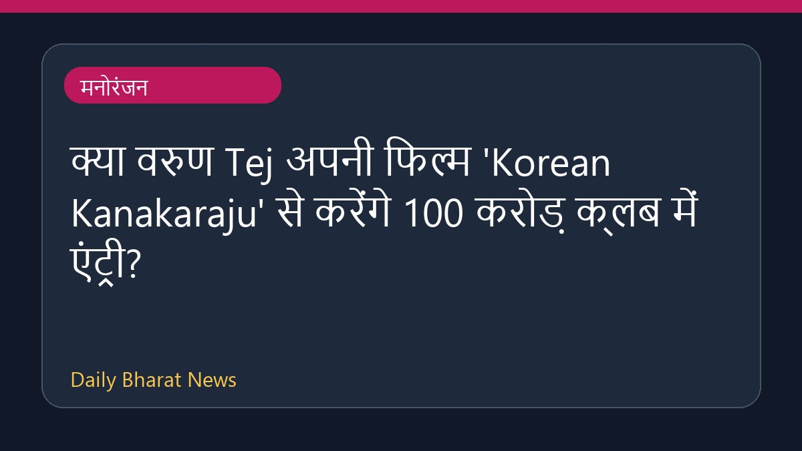

कन्या राशि का आज का राशिफल: 6 अगस्त 2026

वोग इंडिया और अन्य स्रोतों से प्राप्त 6 अगस्त 2026 के राशिफल के अनुसार, इस दिन विभिन्न राशि के जातकों के लिए करियर, व्यवसाय और धन से जुड़े मामलों पर ध्यान केंद्रित रहेगा। हालांकि, इस बारे में विवरण अभी सीमित हैं कि कन्या राशि के जातकों के लिए यह दिन व्यक्तिगत रूप से कैसा रहेगा, लेकिन विभिन्न प्रकाशनों में दैनिक ज्योतिषीय भविष्यवाणियां और राशियां साझा की गई हैं। पाठक अपनी राशि के अनुसार करियर और वित्त से जुड़ी अधिक जानकारी के लिए संबंधित राशिफल की पूरी रिपोर्ट देख सकते हैं।
मूल स्रोत: Entertainment Sources
Virgo Horoscope Today: August 6, 2026 - Vogue India ↗
Virgo Horoscope Today: August 6, 2026 - Vogue India ↗
संबंधित खबरें
 मनोरंजन
मनोरंजनरणबीर कपूर और यश स्टारर 'रामायण' के अंग्रेजी ट्रेलर से प्रशंसक प्रभावित

मनोरंजनमिनी माथुर ने जीती एलायंस की ट्रॉफी, मिला 50 लाख रुपये का नकद पुरस्कार

मनोरंजनक्या वरुण Tej अपनी फिल्म 'Korean Kanakaraju' से करेंगे 100 करोड़ क्लब में एंट्री?
 मनोरंजन
मनोरंजन